Same 1440 × 900 viewport. Visuvate on the left; the working VoxelRad application on the right. Product content, original brand and licensed Instrument fonts are retained. Agency pricing becomes audience information; clinical approval remains explicit.
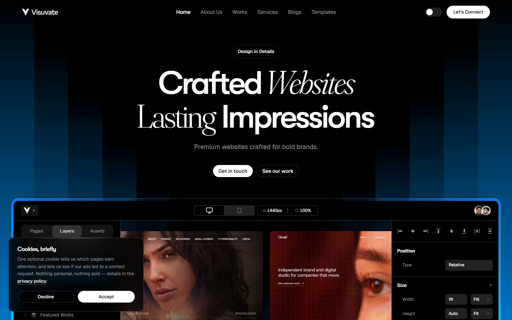
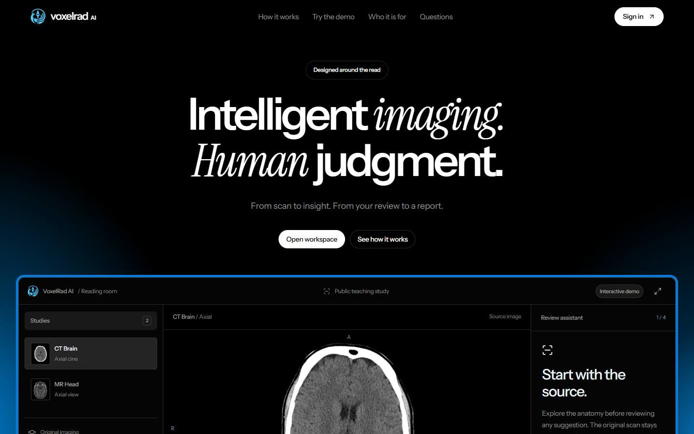
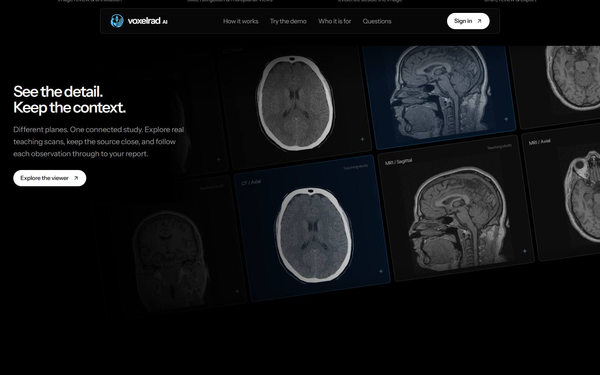
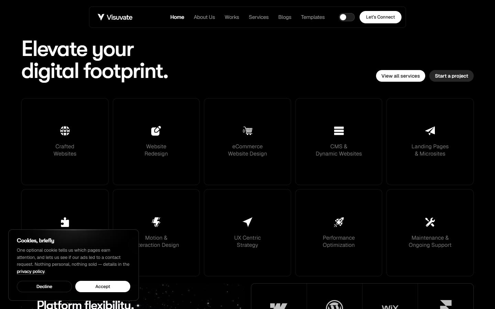
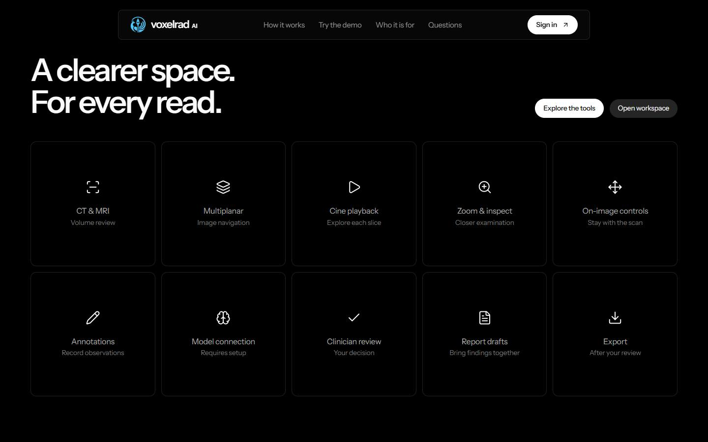
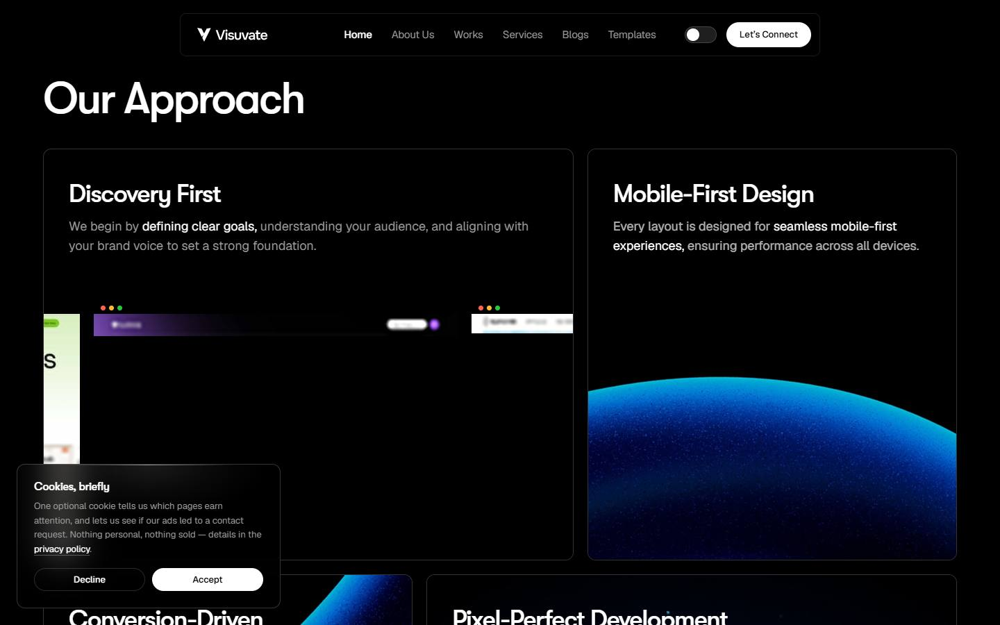
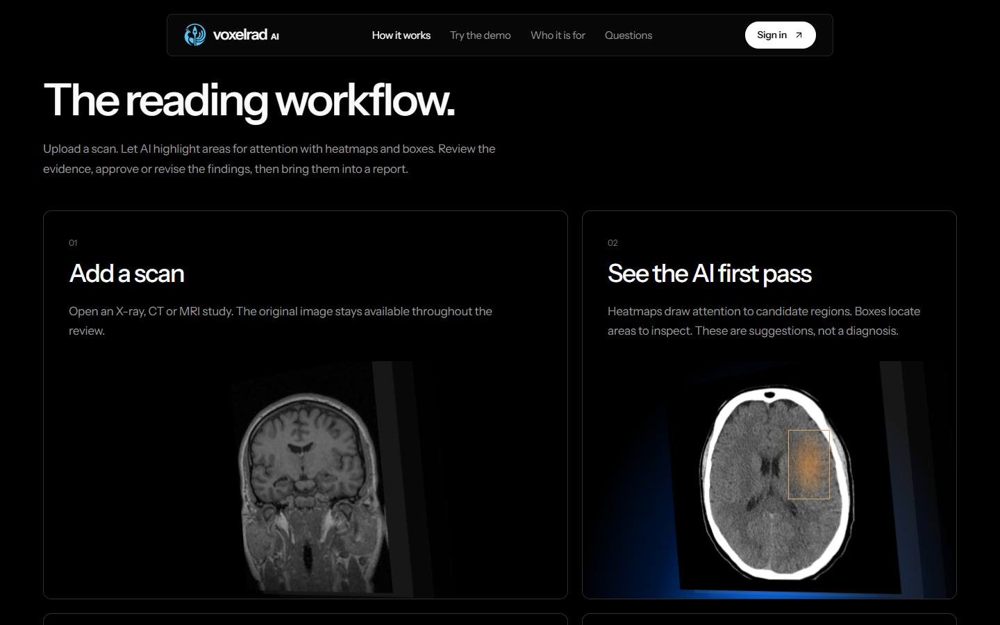
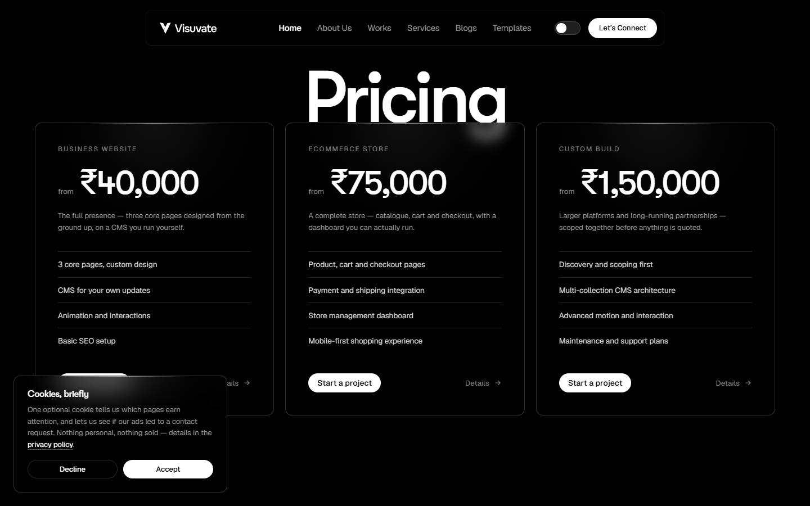
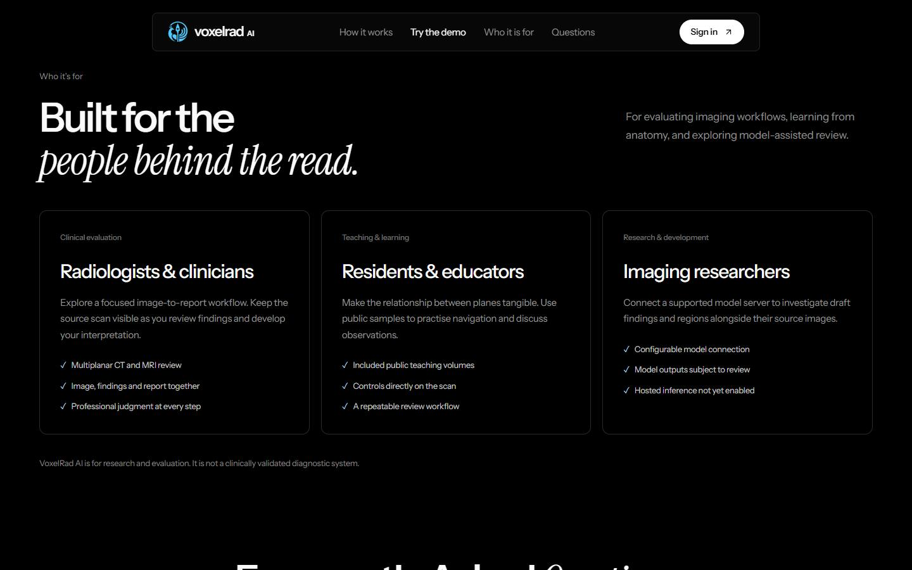
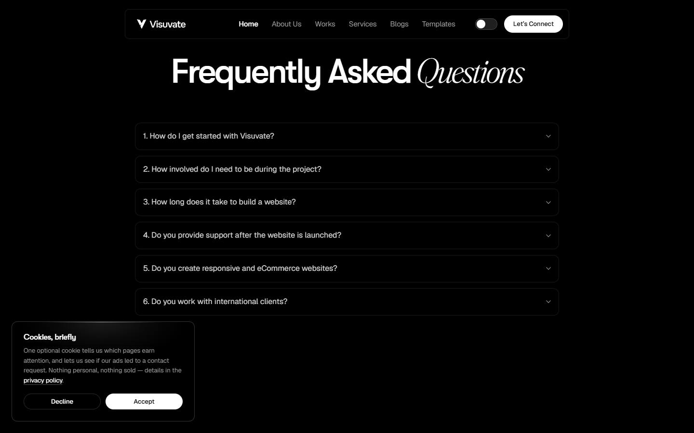
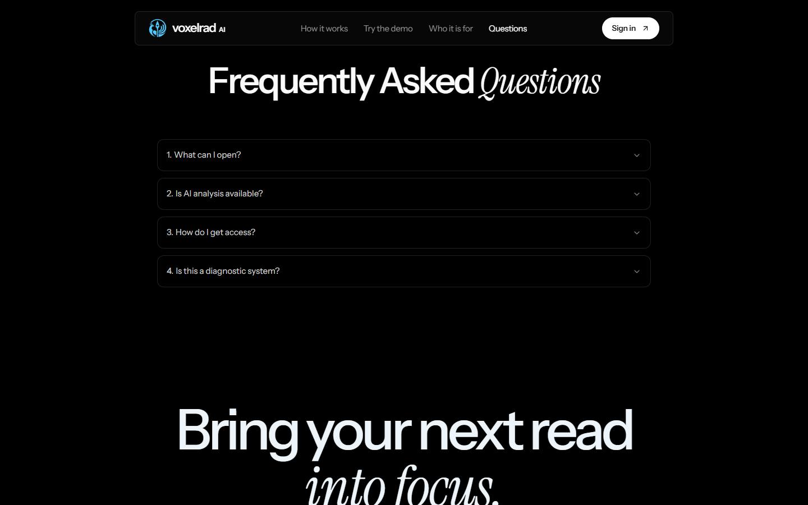
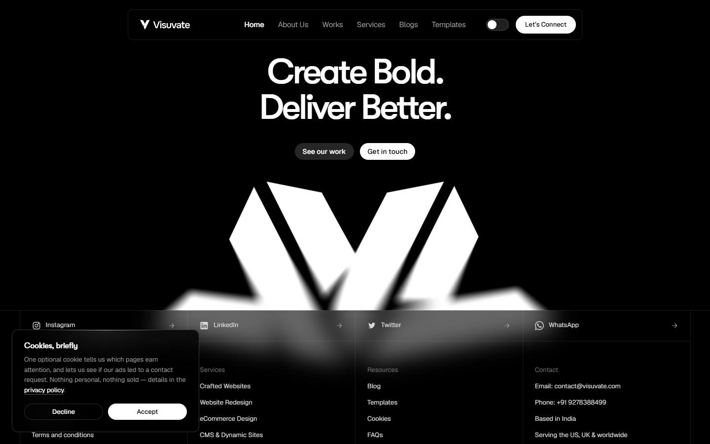
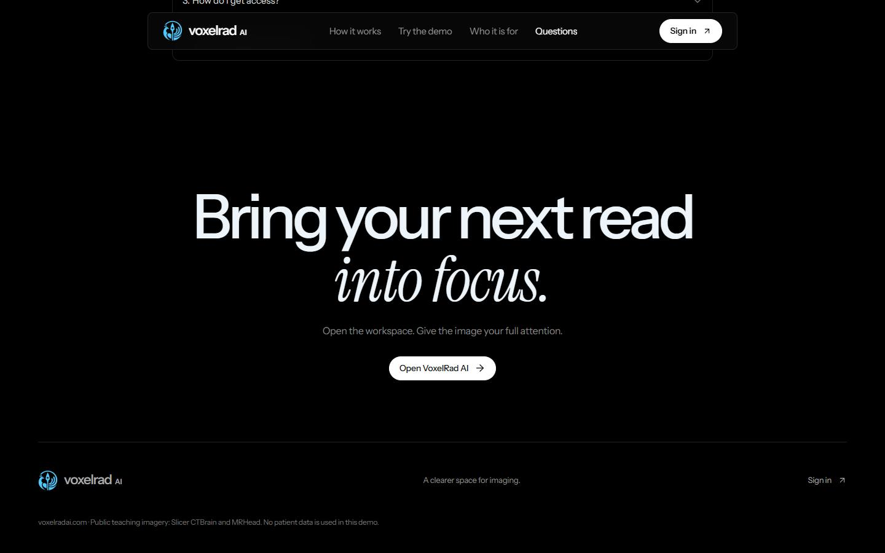
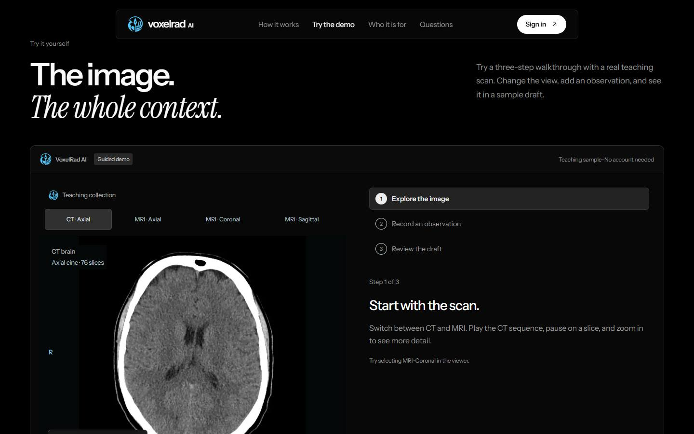